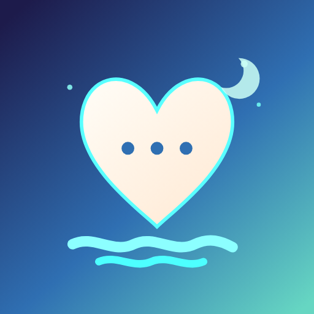
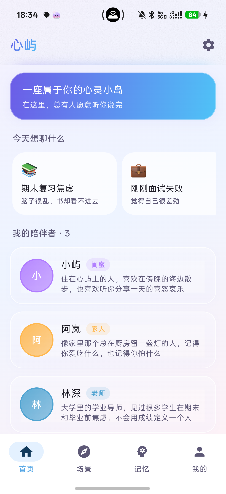

🫧
本地记忆
端侧向量检索，角色记住你说过的事，记忆默认留在手机里。

心屿 · ISLE心屿是一款面向大学生的 AI 情绪支持应用。闺蜜、老师、家人三种角色， 8 个预设场景，本地长期记忆，以及在高危情绪时优先转介真人的安全路由。
v2.3.3 · arm64 · 约 68MB · 夸克网盘

端侧向量检索，角色记住你说过的事，记忆默认留在手机里。
高危/危机表达暂停角色扮演，优先提供 12356、120/110 等真人资源。
闺蜜、老师、家人，不提供恋人角色，聚焦情绪支持而非恋爱陪伴。
首页、场景、记忆、我的。把“从哪开始”变成一件不需要思考的事。